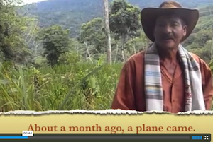
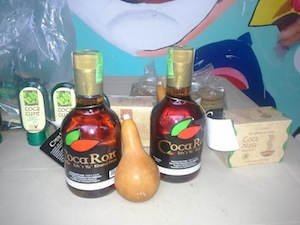

Dear Friends,
Here is this month's update from Colombia.
 By Chris Courtheyn By Chris Courtheyn
“Caminando la palabra,” or “walking the word,” is how several participants described what we did during our recently completed Peace And Solidarity Pilgrimage to Rodoxalí, in this war-torn northwestern Urabá region of Colombia. Organized by the Peace Community of San José de Apartadó, 150 people converged upon the village of Rodoxalí to confirm and confront the presence of death-squad paramilitary groups. The pilgrimage was organized in response to reports that four people had been killed, and paramilitaries had kidnapped and disappeared a young man and demanded that the area’s campesinos give them information and supplies. An estimated 28 families subsequently fled their homes in fear. Read more.
Aerial fumigations of coca in Colombia began in 2000 and have been condemned by human rights and environmental organizations because of their effect on human populations and local soil and water systems. While living in the Peace Community of San Jose de Apartado as international human rights observers in July (22) of 2013 we heard planes and helicopters headed to the small farming village of La Resbalosa. They had been sent to fumigate the coca crops in that region. One month later we traveled on horseback to La Resbalosa to talk with the small farmers living there. Watch the video and take action to help put an end to this destructive and ineffective practice.
By John Lindsay-Poland
Once the signature program of the US drug war in Latin America, aerial fumigation of coca leaf crops is finally in deep trouble. Fumigation’s crisis comes in a moment when coca growers, like other farmers throughout Colombia, face an economic crisis that led to a month-long national agricultural strike in August. An agreement to pay neighboring Ecuador $15 million because of damages caused by border-area fumigation highlights the risks to exposed communities and ecologies brought by continued aerial spraying inside Colombia. And UN fora on illicit drugs organized as a result of peace talks emphasized calls to end fumigation and the criminalization of rural communities. Rural peasants "want the money used for glyphosate in fumigation and forced eradication made into schools, health clinics, productive projects, life plans.” Read more.
|